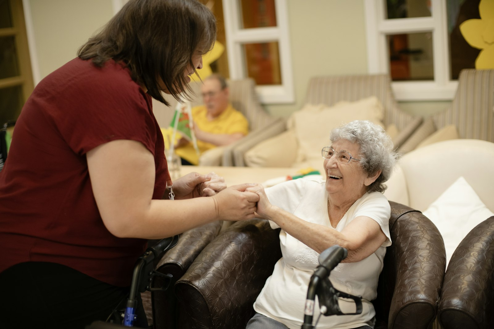

Avise a falta
Acabou o remédio ou a entrega não chegou? A família avisa em poucos toques.
Medicamentos e insumos de uso contínuo entregues por quem entende de saúde.
Acabou o remédio ou a entrega não chegou? A família avisa em poucos toques.
Cadastra o paciente e também avisa a falta durante a visita.
A farmácia da unidade atende por prioridade e leva até a sua porta.
Simples para quem avisa e organizado para quem entrega.
Escolha o paciente, o remédio e a data. São só três telas.
Quem está há mais tempo sem o remédio é atendido primeiro.
A farmácia separa, envia e você acompanha cada etapa.
Entre com a sua conta ou crie a sua com o convite recebido.
Insulina e anti-hipertensivo têm peso maior, e cada dia sem o remédio soma pontos.
Primeira resposta em até 2 dias úteis e entrega em até 7 dias. Passou disso, o aviso fica marcado em atraso.
Cada mudança fica registrada com data, hora e responsável.
Os remédios e insumos são os mesmos da farmácia da sua unidade básica de saúde. O MedKi só organiza o aviso e a entrega, para que ninguém fique sem tratamento. Não há custo para o paciente nem para a família.
Registre a falta e acompanhe a entrega pelo celular.
Avisar faltaCadastre pacientes, vincule familiares e avise na visita.
EntrarAtualize o status com um clique e exporte relatórios.
Entraré a disponibilidade média de medicamentos essenciais na atenção primária. A meta da OMS é 80%.
Nascimento et al., 2017dos usuários não recebem orientação quando o medicamento falta na unidade.
Nascimento et al., 2017é a disponibilidade do tratamento completo para quem usa cinco ou mais remédios.
Oliveira et al., 2016é o ano de criação do programa Remédio em Casa no Rio de Janeiro.
Simões; Monteiro, 2006A farmácia não atende por ordem de chegada. A pontuação de cada aviso é recalculada todo dia.
Não. O MedKi é gratuito para o paciente e a família. Os medicamentos são os mesmos da farmácia da sua unidade básica de saúde.
O familiar ou cuidador vinculado ao paciente e o próprio Agente Comunitário de Saúde. O idoso não precisa usar o sistema.
Fale com o Agente Comunitário de Saúde da sua microárea. Ele cadastra o paciente e envia um código de convite para você criar sua conta.
Não precisa. Se já existe um aviso em aberto para o mesmo paciente e o mesmo insumo, o MedKi mostra o aviso existente e você acompanha por ele.
A farmácia registra a tentativa sem sucesso e o aviso volta para a fila, com a prioridade mantida.
Sim, enquanto ele estiver Pendente, por exemplo quando o remédio chegou por outro meio.
Se o remédio de uso contínuo acabou ou não chegou, avise agora. A farmácia da sua unidade fica sabendo na hora.
